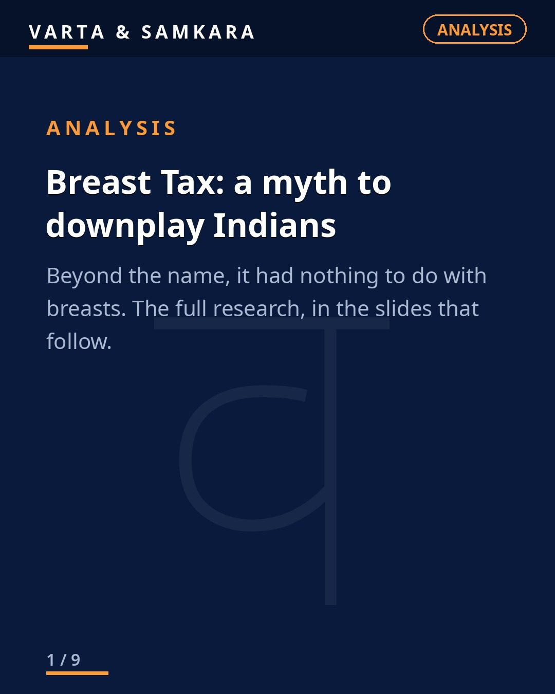
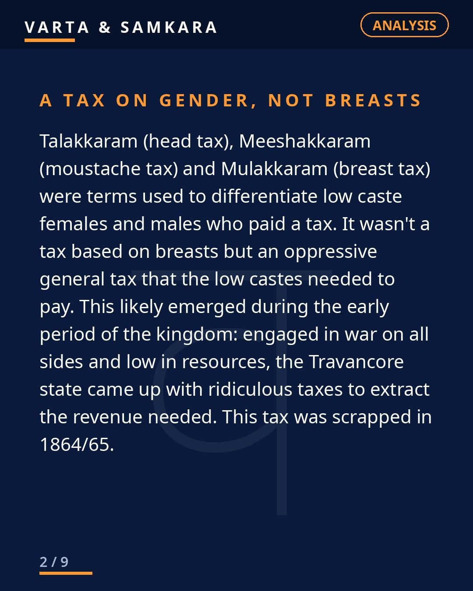
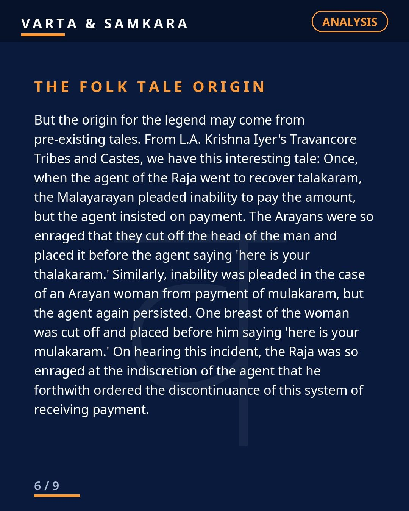
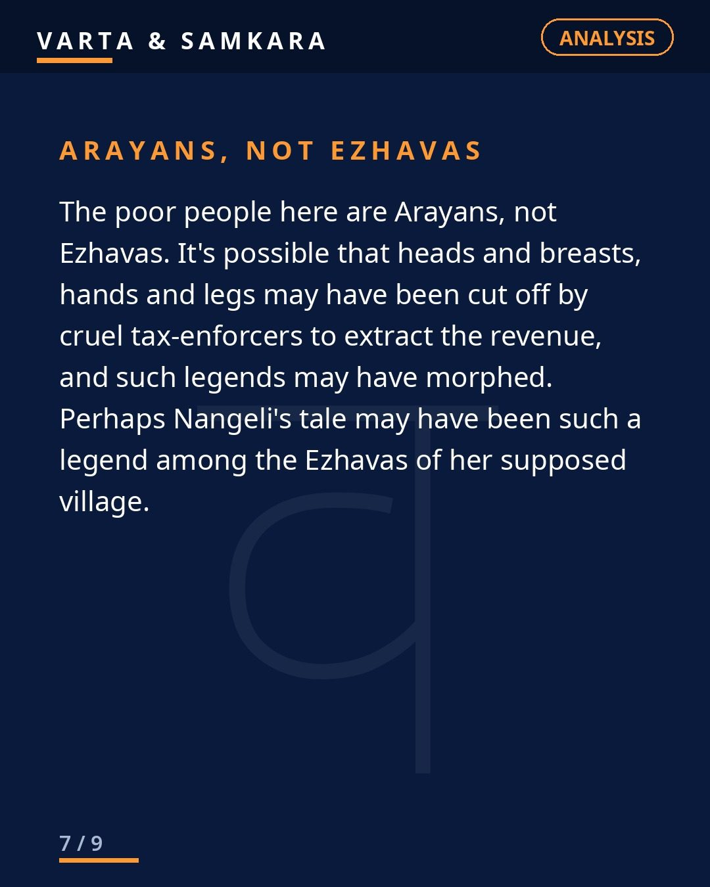

ANALYSIS | The so-called "breast tax" story is being deliberately misrepresented.

The so-called "breast tax" story is being deliberately misrepresented. It is one of those historical claims that gets repeated so confidently, in so many classrooms and comment sections, that questioning it feels like an attack. But history does not care about feelings. Let us look at what the records actually say.
What Mulakkaram actually was
Mulakkaram was not a tax for covering or uncovering breasts. It was a poll tax on lower castes, named by body parts only to distinguish gender, just like Talakkaram (head tax) and Meeshakkaram (moustache tax). The naming convention was administrative, not sexual. One tax for men, marked by the moustache. One for women, marked by the breast. That is all the name ever meant.
No historical record shows women were forced to stay topless because of this tax. Not one. The entire causal story, that women had to bare themselves or pay, has no documentary foundation. It is an inference piled on a mistranslation, repeated until it hardened into "fact."
What travelers actually saw
Multiple foreign travelers, Marco Polo, Pietro Della Valle, John Grose and James Forbes, clearly record that women across Kerala, including royalty, did not cover their upper bodies as a cultural norm. Even queens like Umayamma of Attingal were topless in durbar.
This is the detail that collapses the popular narrative. If uncovered upper bodies were a mark of caste humiliation imposed on lower-caste women, why were queens doing it in court? The practice had nothing to do with caste humiliation or Brahminism. It was simply the cultural norm of the region, across classes, observed and recorded by outsiders with no reason to lie about it.
An oppressive tax, but not that story
To be clear, the tax itself was real and oppressive. It was a harsh revenue policy of the Travancore state during wartime and resource shortage, and it was abolished by 1864-65. Tax collectors in that era were cruel, and the burden fell on people who could least afford it. None of that is in dispute.
But there is a difference between "the state taxed poor people cruelly" and the specific story being sold. The extreme mutilation story comes from folklore recorded by L.A. Krishna Iyer and refers to Arayans, not Ezhavas. It reflects the cruelty of tax collectors, not religious doctrine. Cruel revenue extraction is a story about state power. Turning it into a story about religiously mandated humiliation is a different claim entirely, and it needs its own evidence. It does not have it.
Nangeli and the manufacture of a martyr
As for Nangeli, the woman said to have cut off her own breasts in protest, there is zero historical record before a 2016 BBC article based on an artist's paintings. Zero. No colonial record, no local chronicle, no family account, nothing. A story with no trace in any archive suddenly appears in the 21st century, built on artwork, and gets treated as documented history.
That is modern mythology, not history. And mythology manufactured this recently, for this purpose, deserves skepticism, not reverence.
Why the distinction matters
This is not about defending the Travancore state or romanticizing the past. The tax was unjust. The collectors were brutal. Say all of that loudly.
But getting history right matters because fake history corrupts real justice. If we fight caste oppression with invented stories, we hand our opponents the easiest possible weapon: the truth. Every fabricated detail discovered discredits the genuine grievances alongside it. The real cruelty of the tax system was bad enough. It did not need embellishment, and the embellishment only serves the people who want the whole critique dismissed.
The full research with all cited sources is in the carousel slides. Read them, check them, and then decide.
In pictures



Source: Analytical (user viewpoint, sources cited)
Visuals: Original text graphics
#BreastTax#IndianHistory#Kerala#Analysis#VartaSamkara
See the original reel / carousel with motion graphics on Instagram.
View on Instagram